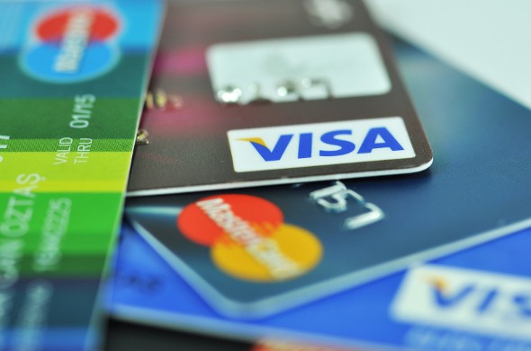

Digital Banking
Easy Personal Loans

Rudra Grameen Bank is a part of Swayay Samridhi Foundation. It is one
of the Rural Co-operative Initiative's leading rural banks and was among
the first to receive approval from the Central Reserve Bank Rural (CRBR).
Today, Grameen Bank has a banking network of 1,608 branches and 3,803 ATMs in
1,890 towns and Nagar Panchayats. Rudra Grameen Bank offers a diverse range of financial products
and banking services to customers through a growing branch and ATM network and digital channels
such as Netbanking, Phonebanking and Mobilebanking.
Its sole objective is to make people of rural
and semi-urban areas self sufficient, progressive and coming parallel to the global innovation initiative.

This website is the outcome of a intern project, and does not necessarily represent the views of any organisation or any other individuals referenced or acknowledged within the website. Anyone may reproduce, distribute, adapt, translate the content on the website, without explicit permission, provided that the content is accompanied by an acknowledgement that Rudra Grameen Bank website is the source and that it is clearly indicated if changes were made to the original content.